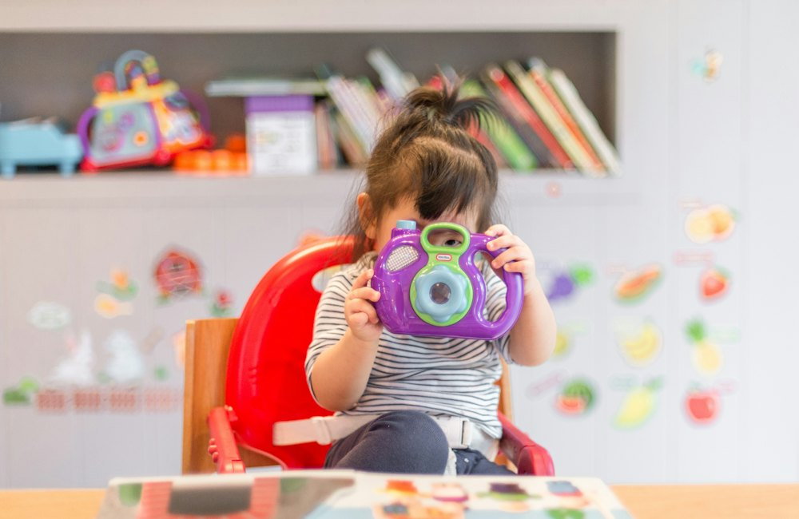
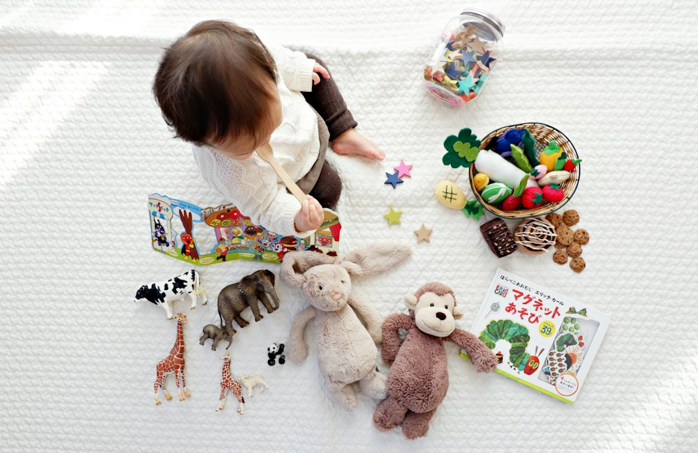

Accueil › Outils
Outils pour les parents
Carnets, jeux et histoires

Histoire du soir personnalisée
Avec son prénom, lue à voix haute.
Lire →Suivi de bébé
Tétées, sommeil, couches.
Lire →Journal de ses premières fois
Une frise de souvenirs.
Lire →Le jeu des prénoms
Coups de cœur et prénoms en commun.
Lire →Quiz vrai ou faux
10 idées reçues à démêler.
Lire →
Liste de naissance
L'essentiel, à cocher.
Lire →
Tableau de routine
À imprimer, avec son prénom.
Ouvrir →
Matériel par âge
Ce qui sert vraiment.
Lire →Les calculateurs
⏰ Sommeil · 🧭 Écrans · 🥕 Diversification · 💶 Budget bébé · 🎲 Idée d'activité · 🪙 Argent de poche · 🗓️ Routine
12 outils et jeux gratuits, sans inscription. Chaque utilisation vous rapporte des graines 🌱. Rien n'est envoyé : tout se calcule dans votre navigateur.
⏰ Combien doit dormir mon enfant ?
Repères de l'Académie américaine de médecine du sommeil et de la National Sleep Foundation. Chaque enfant est différent : s'il est en forme et grandit bien, son sommeil lui convient probablement.
🧭 Écrans : que recommandent les experts à cet âge ?
D'après le rapport de la commission d'experts « Enfants et écrans » (2024) et les recommandations de l'OMS. Pour aller plus loin : écrans et enfants, le guide complet.
🥕 Diversification : que peut manger bébé ce mois-ci ?
D'après le Programme national nutrition santé et la Société française de pédiatrie. Bébé prématuré, allergie dans la famille ou doute : parlez-en à votre médecin. Le guide complet : la diversification mois par mois.
💶 Combien coûte la première année de bébé ?
Estimations moyennes, hors frais de garde (très variables selon le mode de garde et vos revenus : simulez-les sur monenfant.fr).
🎲 Idée d'activité au hasard
Un enfant qui s'ennuie ? Choisissez son âge et tirez une idée, sans écran et avec ce que vous avez à la maison.
Plus d'idées : 30 activités à faire à la maison.
🪙 Combien d'argent de poche selon l'âge ?
Il n'existe pas de montant officiel : ce sont des fourchettes courantes en France. L'essentiel est la régularité et ce qu'il doit payer lui-même.
🗓️ Tableau de routine à imprimer
Créez le tableau du matin ou du soir de votre enfant, avec son prénom, et imprimez-le.